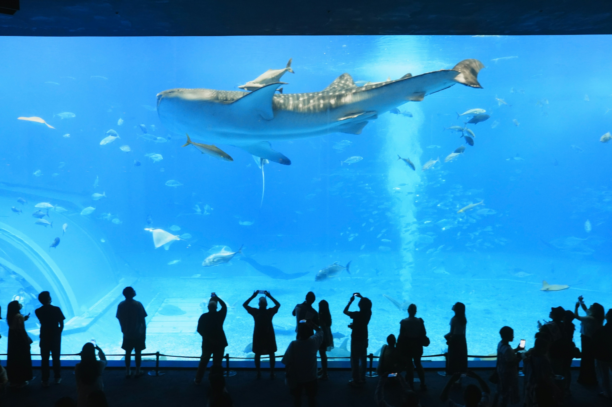

Океанариум Тюрауми
Китовая акула проходит перед огромным окном, скаты парят над рыбами, а дальше начинается мир океанских глубин.
🇯🇵 Показать местному
〒905-0206 沖縄県国頭郡本部町字石川424
Что этоОкеанариум о морях Окинавы: от освещённого рифа до Куросио и глубины.
ГлавноеБольшой аквариум «Море Куросио» с китовой акулой и скатами.
Не пропуститеРазницу между рифовыми обитателями, рыбами открытой воды и глубоководными животными.
- Китовая акула — за главным окном «Моря Куросио».
- Скаты — в том же аквариуме, над стаями рыб.
- Обитатели глубины — в заключительной части экспозиции.
- Сохраните порядок залов: он раскрывает переход от рифа к открытому океану и глубине.
- При съёмке уберите вспышку и не ставьте штатив: штативы внутри запрещены.
История и подробности
Тюрауми устроен как путешествие от берегового рифа в открытый океан и дальше, туда, куда почти не проникает солнечный свет. Вместо коллекции животных со всего света здесь показывают морскую среду Окинавы. Самая узнаваемая сцена — китовая акула перед большим окном «Моря Куросио», но смысл маршрута становится яснее, если замечать, как от зала к залу меняются освещение, формы животных и пространство вокруг них.
Название соединяет окинавское «тюра» — «красивый» и японское «уми» — «море». Нынешний океанариум открылся 1 ноября 2002 года на территории парка, выросшего из Международной океанической выставки 1975 года. Это современное продолжение истории места: после временной выставки здесь остались постоянные учреждения, посвящённые океану и природе островов.
Куросио — тёплое течение, проходящее вдоль островов Рюкю. Оно связывает прибрежные рифы с большим океаном. В одноимённом аквариуме объёмом 7 500 кубометров особенно хорошо виден масштаб пелагических рыб — тех, кто живёт в толще открытой воды. Китовая акула кажется медленной, пока рядом не оказывается человек по эту сторону стекла. Скаты движутся иначе: плавники работают широкими взмахами, почти как крылья.
Чаша имеет глубину 10 метров, ширину 35 метров и длину 27 метров. Эти числа помогают понять не только размеры сооружения, но и то, сколько свободного пространства требуется его обитателям. Состав экспозиции может меняться в зависимости от состояния животных; обещать конкретное число акул или скатов на день посещения нельзя.
В небольших залах полезно смотреть на детали, которые теряются у огромного окна: способ движения, окраску, положение глаз. У рифа рыбе нужны укрытия и манёвренность, в открытой воде — непрерывное движение, на глубине — другие способы ориентироваться. Так отдельные экспозиции складываются в рассказ об одном море, а не в набор независимых достопримечательностей.
- 1975 — на этом побережье проходит Международная океаническая выставка.
- 1976 — на её территории создаётся национальный парк.
- 2002 — 1 ноября открывается нынешний океанариум Тюрауми.